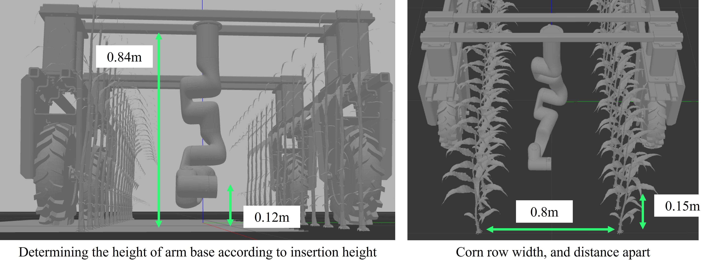
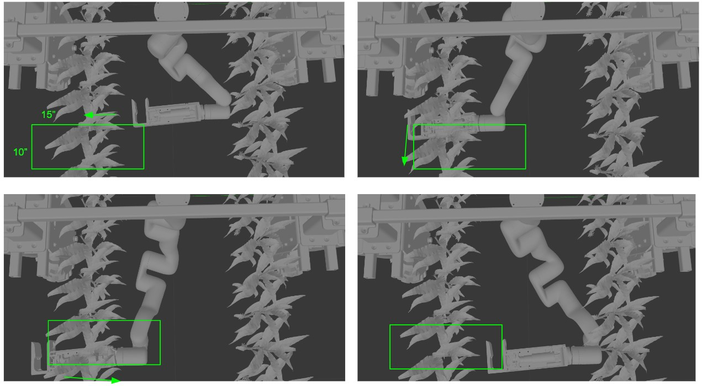
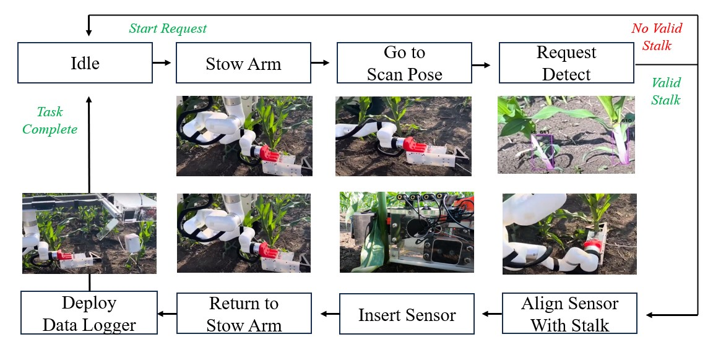
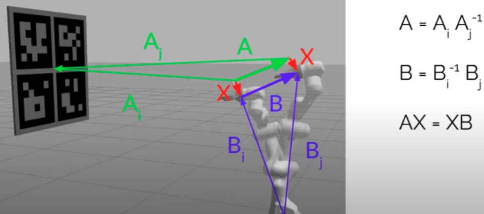

Design Specification
Given that we have scoped the problem to insert sensors only to corns in V3-V8 stages, this specifies the mobile platform dimensions as laid out in section "Robot Platform".
However, the design choice of what robot arm to use and where to mount it need to be considered.
As the mobile platform straddles the two rows corn (row spacing is 0.8m), the robot arm is in the middle of the two rows and is expected to be able to insert sensors into any sides.
The distance between corn within a row is 0.15m, and the gripper is compact enough to fit into that space as discussed in section "Gripper Design".
In this section, we discuss the finite state machine, camera in-hand calibration, and xArm's motion controller,

xArm Platform
We utilize the UFactory xArm robot that has 6 degrees of freedom with 5kg payload with 700mm max reach. Of the existing robot arms available, we chose xArm robot for its low price.
As the xArm SDK provides easy to use interface with the robot controller, we utilize the Python API directly to control the robot.
Given a detected stalk pose, we use a combination of joint and cartesian space commands to move the gripper to the stalk with a pre-determined sequence of actions.
More specifically, this means heuristically determining sequence of joint space trajectories for the robot to avoid collision with the mobile base.
Once the robot is in a safe location, we operate in cartesian space to move the in-hand camera to detect the corn stalk.
The sequence of approaching a corn stalk, funneling the stalk into the corn, and aligning the sensor to the stalk are predeteremined.
As we are not reasoning about external collision avoidance from detected pointclouds, using the built-in API for inverse kinematics and trajectory generation was sufficient to handle self-collision.
The benefit of not handling external collision avoidance is that the motion sequence can be fast and lightweight.
Although there is risk of colliding the robot arm, we assumed collision with corn stalks or leaves would be compliant. In addition, we set a hardware current limit setting on the xArm in case of a hard collision.
Determining Arm Location through Simulation
For choosing the mounting the position of the arm, we had to ensure two factors. First, that the gripper could funnel into the stalks on both sides of the corn rows.
Second, that the gripper could reach the 0.12m height (approx 4") off the ground where the nitrate sensor readings would be most valuable.
Before proceeding to manufacture parts for robot arm mounts, we ran a validation motion experiment in simulation with the set dimensions.
Given the long cantilever gripper design attached to the xArm, it was important to verify
that the robot could indeed reach desired insertion position from the determined mounting configuration.
We visually set a range of motion by required to target stalks on both sides of the plant,
and verified that planar motions within this bounded region is kinematically feasible by incorporating MoveIt planner in simulation.
The simulation setup with the MoveIt planner can be found in this Github repo for showing xArm Amiga simulation in Gazebo
Code

Finite State Machine
The entire insertion pipeline is operated using a finite state machine (FSM) built off of ROS SMACH library.
The figure below shows the flow diagram of the FSM, covering the xArm motion, stalk detection, sensor insertion, and deploying the data logger.
The states corresponding to the xArm motion are simply API calls to move the robot. The detect state request a ROS service for the detection pipeline
as discussed in "Stalk Detection". Given a valid stalk pose, the state proceeds to align with the stalk.
In the insertion state, we perform a serial communication with the Arduino inside the gripper that triggers the 2 channel relay to extend and retract the linear actuator.
Finally, once the robot has returned back to the stowed position, the deploy state performs another serial communication with a different Arduino inside the Deployment box
to open 1 of the 5 available dataloggers to be released.

Camera Mounting & In-hand Calibration
RGBD cameras based on active infrared sensing, which are commonly used in robotics settings, do not work reliably outdoors due to the strong interface from the sun.
We therefore selected a stereo based RGBD camera (Intel Realsense D405) that we can use outside. Another benefit of this camera is its compactness (42x42x23mm)
so that we can mount it of the end-effector of the robot and see both sides of the stalk rows and open the opportunity to explore multi-view imaging if needed.
As both the robot and stalk are static, rather than implementing visual servoing, we adopted an open-loop detection to robot motion.
This approach removed the restriction of having the stalk always within the field of view of the camera,
and therefore could mount the camera on the inner left side of the gripper, protecting the lens from dirt as well as making the end-effector more compact.
Since we are doing open-loop detection to motion method, it was important to perform a precise in-hand extrinsic calibration to determine the transformation between the camera to the robot end-effector.
We used the ViSP library to solve for the transformation given sample pairs of multiple end-effector poses and Charuco marker poses from the camera. More information can be found in this Github repo .
